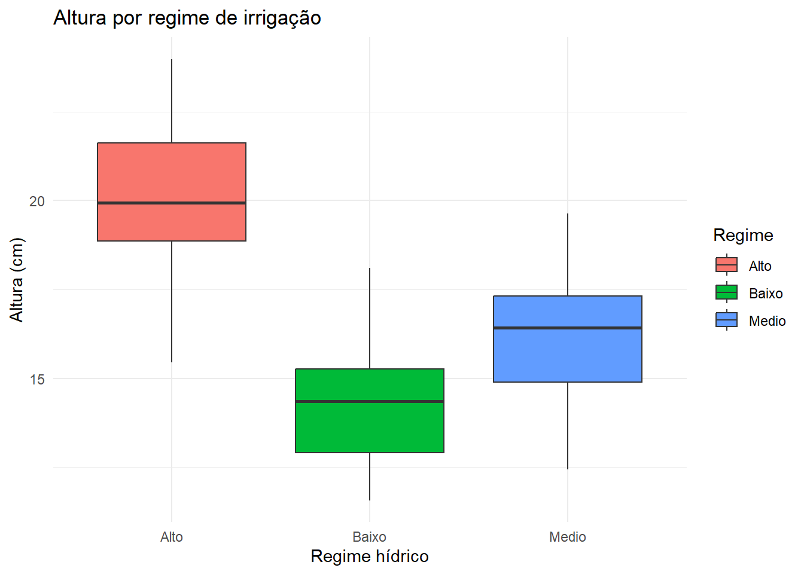
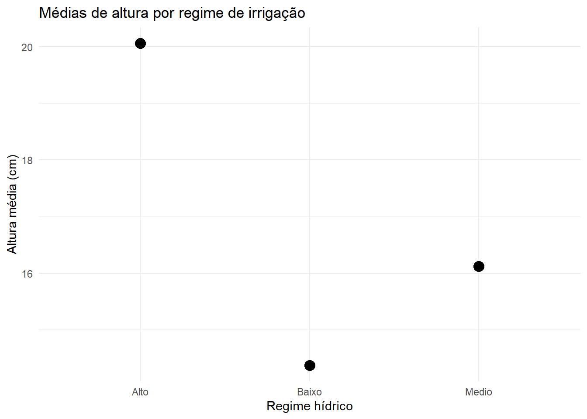

Imagine que você está em um experimento florestal avaliando o crescimento de mudas de Cedrela fissilis sob diferentes regimes de irrigação: Baixo, Médio e Alto.
Antes de aplicar qualquer análise estatística, precisamos organizar o raciocínio experimental:
O que é variável resposta?
O que é fator?
O que significa nível do fator?
Quem é a unidade experimental?
3.2 🎯 Objetivos de aprendizagem
Ao final deste capítulo, você será capaz de:
Distinguir variáveis quantitativas e qualitativas.
Identificar fatores e seus níveis em experimentos florestais.
Relacionar variáveis explicativas (fatores) e variáveis resposta.
Reconhecer a unidade experimental como elemento central.
Criar resumos e gráficos exploratórios no R (Colab).
Elaborar uma tabela de planejamento experimental.
3.3 🌳 Parte 1 – Conceitos fundamentais
Variável. Característica que pode variar entre indivíduos/unidades.
Quantitativas contínuas: altura da muda, diâmetro, biomassa.
Quantitativas discretas: número de folhas, número de sementes germinadas.
Qualitativas/categóricas: espécie, regime de irrigação, tipo de substrato.
Fator. Variável controlada pelo pesquisador (ex.: regime de irrigação).
Níveis do fator. Categorias/condições do fator (ex.: Baixo, Médio, Alto).
Unidade experimental. Menor porção que recebe o tratamento (ex.: cada muda em tubete).
Variável resposta. O que se mede para avaliar o efeito do fator (ex.: altura, diâmetro, biomassa).
3.4 🌳 Parte 2 – Exemplos florestais
Exemplo 1 – Irrigação em Cedrela fissilis
Fator: Regime hídrico
Níveis: Baixo, Médio, Alto
Unidade experimental: cada planta em tubete
Variáveis resposta: altura, diâmetro, biomassa
Exemplo 2 – Ensaio em campo com Pinus
Fatores: adubação e espaçamento
Níveis:
Adubação: com e sem
Espaçamento: 2x2m, 3x2m, 3x3m
Unidade experimental: parcela (10 árvores)
Variáveis resposta: sobrevivência, altura, volume de madeira
3.5 💻 Parte 3 – Exploração prática no R (Colab)
Caminhos dos arquivos - No ebook/local: dados/cedrela_irrigacao.csv e dados/crescimento_mudas.csv - No Colab (após upload): /content/cedrela_irrigacao.csv e /content/crescimento_mudas.csv
3.5.1 3.1 Importar dataset Cedrela fissilis
Código
library(readr); library(dplyr)# Ebook/local (caminho relativo)cedrela <-read_csv("dados/cedrela_irrigacao.csv", show_col_types =FALSE)# Para Colab, use:# cedrela <- read_csv("/content/cedrela_irrigacao.csv", show_col_types = FALSE)# Estrutura dos dados e amostrastr(cedrela)
# A tibble: 3 × 6
Regime n media_altura desvio_altura media_diam media_biomassa
<chr> <int> <dbl> <dbl> <dbl> <dbl>
1 Alto 25 20.1 2.28 3.84 12.4
2 Baixo 25 14.4 1.83 2.98 7.78
3 Medio 25 16.1 2.00 3.30 9.80
3.5.3 3.3 Gráficos exploratórios
Código
library(ggplot2)# Boxplot de altura por regimeggplot(cedrela, aes(x = Regime, y = Altura_cm, fill = Regime)) +geom_boxplot() +labs(title ="Altura por regime de irrigação",x ="Regime hídrico", y ="Altura (cm)") +theme_minimal()

Código
# Pontos das médias de altura por regimecedrela %>%group_by(Regime) %>%summarise(media_altura =mean(Altura_cm)) %>%ggplot(aes(x = Regime, y = media_altura)) +geom_point(size =4) +labs(title ="Médias de altura por regime de irrigação",x ="Regime hídrico", y ="Altura média (cm)") +theme_minimal()

3.6 🤔 Parte 4 – Discussão guiada (com Cedrela fissilis)
Use os resultados exploratórios do item 3 para discutir em grupo:
Qual é o fator do experimento? Quais são seus níveis?
Quem é a unidade experimental e por que defini-la corretamente é crucial?
As médias e boxplots sugerem diferenças entre os regimes? Isso já é evidência conclusiva?
Quais variáveis resposta (altura, diâmetro, biomassa) parecem mais sensíveis ao tratamento?
Se você pudesse repetir esse experimento no futuro, o que faria diferente para ter mais confiança nos resultados?
3.7 📝 Exercício integrador (dataset de mudas)
Dataset:dados/crescimento_mudas.csv (ou /content/crescimento_mudas.csv no Colab).
Tarefas:
Importe o dataset no Colab.
Identifique:
Fator e seus níveis;
Unidade experimental;
Variáveis resposta.
Crie boxplots de Altura e Biomassa por tratamento.
Construa uma tabela resumo com as colunas: Fator | Níveis | Unidade experimental | Variáveis resposta.
Explique em um parágrafo:
a diferença entre variável explicativa (fator) e variável resposta;
a importância de definir corretamente a unidade experimental.
Código
# Leitura para iniciar o exercício integradormudas <-read_csv("dados/crescimento_mudas.csv", show_col_types =FALSE)str(mudas)
✅ Dica para o relatório:
A tabela resumo (Fatores, Níveis, Unidade experimental, Variáveis resposta) deve ser incluída em cada relatório.
Ela funciona como um mapa conceitual que orienta todas as análises posteriores.
🗂️ Como montar sua tabela no Colab usando Markdown
No Colab/Quarto, escreva tabelas em Markdown.
Use | para separar colunas e - para indicar o cabeçalho.
Exemplo:
| Fator | Níveis | Unidade experimental | Variáveis resposta |
| ------------------- | ------------------ | -------------------- | -------------------------- |
| Regime de irrigação | Baixo, Médio, Alto | Cada muda em tubete | Altura, Diâmetro, Biomassa |
💡 Tarefa: substitua os conteúdos da tabela conforme o seu experimento.